ST22 ST-22: Starter Deck 22 Ace & Newgate
English One Piece Card Game deck ST-22 · card list, every variant, and PSA 10 chase cards
Card catalog: the official Bandai card list.ST-22: Starter Deck 22 Ace & Newgate (ST22, ST-22) is an English One Piece Card Game deck with an English release date of September 5, 2025 and 31 cards in its full card list, counting each parallel, manga and SP version separately. Start with the top chase cards below, or jump to the full card list.
Jump to: Top chase · Full card list · Set facts · FAQ
Characters in ST22
Top chase cards in ST22 3
Special versions from this product. Open a card page to see how to tell its versions apart.
| Card | Version | Rarity | Card page |
|---|---|---|---|
| ST22-001 Ace & Newgate | Alternate Art (AA) | L | Open › |
| ST22-002 Izo | Alternate Art (AA) | SR | Open › |
| ST22-005 Kouzuki Oden | Alternate Art (AA) | SR | Open › |
Full card list
| No. | Name | Rarity | Version | Product | Color | Type | Cost/Life | Power |
|---|---|---|---|---|---|---|---|---|
| ST22-001 | 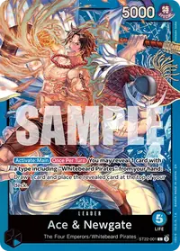 Ace & Newgate | L | Normal | ST22 | Blue | Leader | 5 | 5000 |
| ST22-001 | 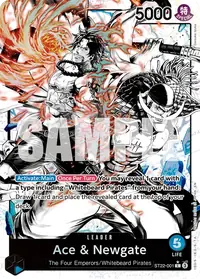 Ace & Newgate | L | Alternate Art (AA) | ST22 | Blue | Leader | 5 | 5000 |
| ST22-002 | 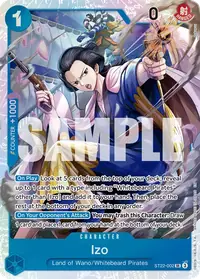 Izo | SR | Normal | ST22 | Blue | Character | 1 | |
| ST22-002 | 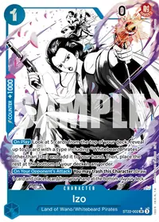 Izo | SR | Alternate Art (AA) | ST22 | Blue | Character | 1 | |
| ST22-003 | 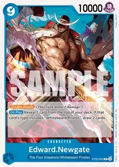 Edward.Newgate | C | Normal | ST22 | Blue | Character | 9 | 10000 |
| ST22-003 | 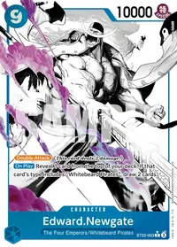 Edward.Newgate | C | Alternate Art (AA) | ST22 | Blue | Character | 9 | 10000 |
| ST22-004 | 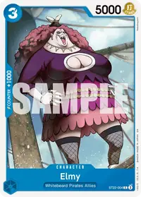 Elmy | C | Normal | ST22 | Blue | Character | 3 | 5000 |
| ST22-004 | 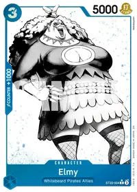 Elmy | C | Alternate Art (AA) | ST22 | Blue | Character | 3 | 5000 |
| ST22-005 | 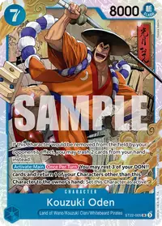 Kouzuki Oden | SR | Normal | ST22 | Blue | Character | 7 | 8000 |
| ST22-005 | 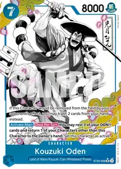 Kouzuki Oden | SR | Alternate Art (AA) | ST22 | Blue | Character | 7 | 8000 |
| ST22-006 | 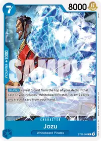 Jozu | C | Normal | ST22 | Blue | Character | 7 | 8000 |
| ST22-006 | 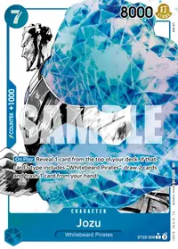 Jozu | C | Alternate Art (AA) | ST22 | Blue | Character | 7 | 8000 |
| ST22-007 | 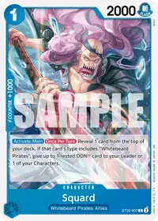 Squard | C | Normal | ST22 | Blue | Character | 1 | 2000 |
| ST22-007 | 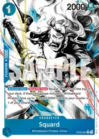 Squard | C | Alternate Art (AA) | ST22 | Blue | Character | 1 | 2000 |
| ST22-008 | 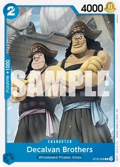 Decalvan Brothers | C | Normal | ST22 | Blue | Character | 2 | 4000 |
| ST22-008 | 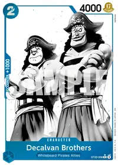 Decalvan Brothers | C | Alternate Art (AA) | ST22 | Blue | Character | 2 | 4000 |
| ST22-009 | 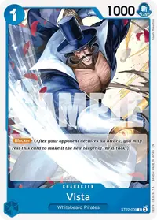 Vista | C | Normal | ST22 | Blue | Character | 1 | 1000 |
| ST22-009 | 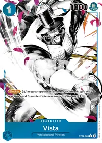 Vista | C | Alternate Art (AA) | ST22 | Blue | Character | 1 | 1000 |
| ST22-010 | 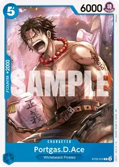 Portgas.D.Ace | C | Normal | ST22 | Blue | Character | 5 | 6000 |
| ST22-010 | 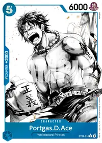 Portgas.D.Ace | C | Alternate Art (AA) | ST22 | Blue | Character | 5 | 6000 |
| ST22-011 | 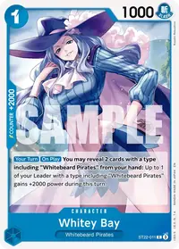 Whitey Bay | C | Normal | ST22 | Blue | Character | 1 | 1000 |
| ST22-011 | 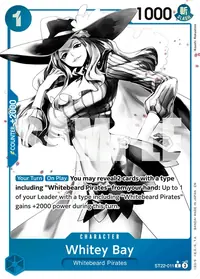 Whitey Bay | C | Alternate Art (AA) | ST22 | Blue | Character | 1 | 1000 |
| ST22-012 | 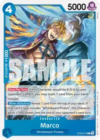 Marco | C | Normal | ST22 | Blue | Character | 4 | 5000 |
| ST22-012 | 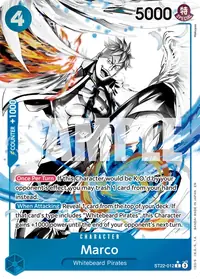 Marco | C | Alternate Art (AA) | ST22 | Blue | Character | 4 | 5000 |
| ST22-013 | 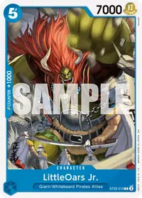 LittleOars Jr. | C | Normal | ST22 | Blue | Character | 5 | 7000 |
| ST22-013 | 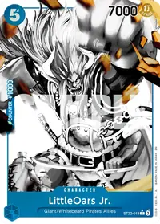 LittleOars Jr. | C | Alternate Art (AA) | ST22 | Blue | Character | 5 | 7000 |
| ST22-014 | 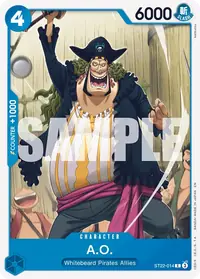 A.O. | C | Normal | ST22 | Blue | Character | 4 | 6000 |
| ST22-014 | 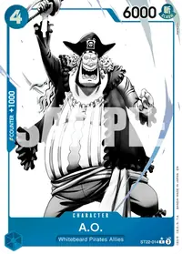 A.O. | C | Alternate Art (AA) | ST22 | Blue | Character | 4 | 6000 |
| ST22-015 | 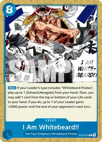 I Am Whitebeard!! | C | Normal | ST22 | Blue | Event | 8 | |
| ST22-016 | 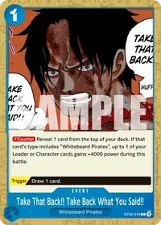 Take That Back!! Take Back What You Said!! | C | Normal | ST22 | Blue | Event | 1 | |
| ST22-017 | 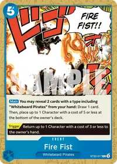 Fire Fist | C | Normal | ST22 | Blue | Event | 5 | |
| ST22-003 | Edward.Newgate | C | Promo · Premium Card Collection -6 assort vol.1- | OP-PR | Blue | Character | 9 | 10000 |
Card image: © Bandai / ONE PIECE CARD GAME official card list
Set facts
- Official product name
- STARTER DECK -Ace & Newgate- [ST-22]
- Set code
- ST22 · ST-22
- English release
- 2025-09-05
- Japanese release
- 2025-04-26 (OPChase research notes)
- Official Bandai links
- Official card list
FAQ
When was ST22 ST-22: Starter Deck 22 Ace & Newgate released in English?
ST-22: Starter Deck 22 Ace & Newgate (ST-22) was released in English on 2025-09-05. The Japanese version came out on 2025-04-26.
How many cards are in ST22?
17 card numbers in our card database. Our database has 31 card printings in the English deck.